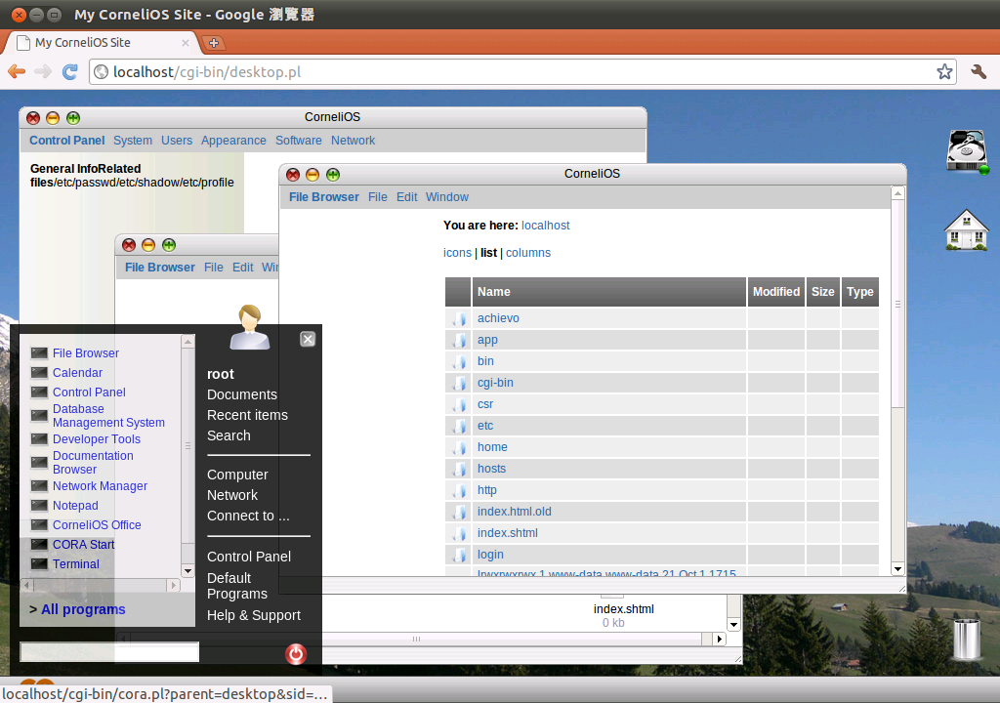
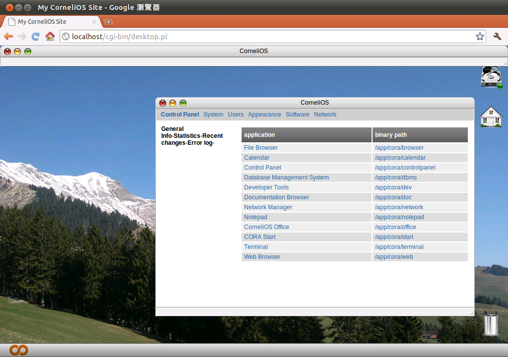
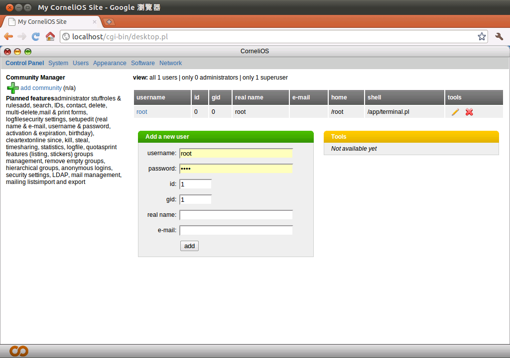
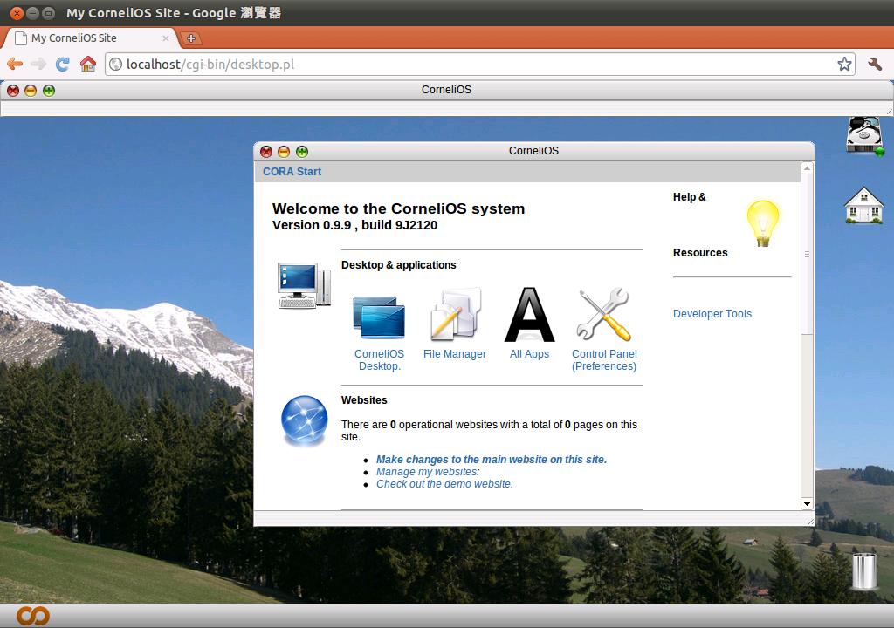
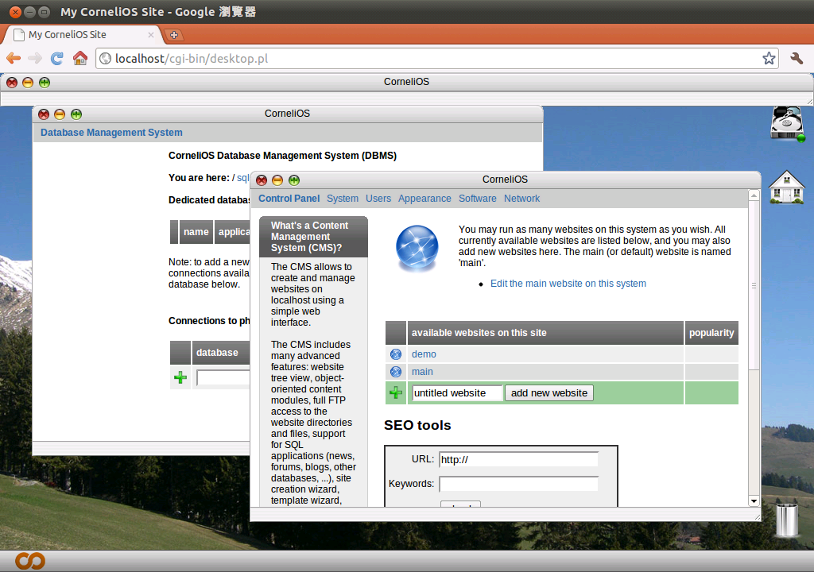

感謝您對「自由軟體鑄造場」的支持與愛護，十多年來「自由軟體鑄造場」受中央研究院支持，並在資訊科學研究所以及資訊科技創新研究中心執行，現已完成階段性的任務。 本網站預計持續維運至 2021年底，網站內容基本上不會再更動。
也紀念我們永遠的朋友 李士傑先生（Shih-Chieh Ilya Li）。
也紀念我們永遠的朋友 李士傑先生（Shih-Chieh Ilya Li）。
FOSS Programs  瀏覽器即為作業系統－CorneliOS
瀏覽器即為作業系統－CorneliOS
瀏覽器即為作業系統－CorneliOS
Created at Friday, 29 October 2010 00:36 Last Updated on Thursday, 18 November 2010 17:24
前言
許多人都知道，電腦的開機過程是先經由 BIOS 進行基本的檢測，再將控制權交給開機啟動程式 (Boot Loader)，以便載入作業系統。作業系統一旦載入記憶體並開始執行，便表示作業系統將會持續執行，負責所有軟硬體相關的工作，直到系統關機為止。多年以來這樣的操作模式已經成為眾人使用電腦的基本模式，大多數人也相當習慣這樣的執行方式。官方網站：https://www.cornelios.org/
下載網址：https://ncu.dl.sourceforge.net/project/cornelios/CorneliOS/CorneliOS%200.9.9r21/cornelios_gpl_9J2120.zip (34.7MB)
時間回到 2008 年 9 月，當時搜尋引擎的巨擘 Google 公司推出 Google Chrome 瀏覽器，並吸引所有資訊相關媒體的目光焦點。當時許多人都在猜測，Google 的下一步會不會是推出作全新的作業系統，與微軟公司的 Windows 作業系統一較高下。但當年仍然是 Google 大中華區總裁的李開復先生便明確表示，Google 並沒有研發作業系統的計畫，因為如果將所有的服務改由雲端服務提供，瀏覽器便會取代作業系統。也就是說，「瀏覽器就是未來的作業系統」。
多年下來 Google 的確推出許多以網路為主的服務，包括電子郵件、文書處理、行事曆等眾人皆知的服務，一律可以直接由瀏覽器執行。雖然目前大多數的電腦都需要先行開機才能以瀏覽器執行這些服務，但從以上的使用經驗看來，如果可以設計一套電腦系統，一開機便直接執行瀏覽器作為操作介面，理論上是可以達到以瀏覽器作為作業系統的目的。除了可以從 Google 所提供的服務驗證這樣的可能性以外，網路上也有一些軟體系統朝著相同的目標邁進，也就是讓瀏覽器成為下一代的作業系統。例如本文所要介紹的 CorneliOS 便是最好的例子。

CorneliOS 的操作介面
以瀏覽器為主要操作介面的 CorneliOS
CorneliOS 本身是一套相當容易使用的網頁桌面環境，也可以作為網頁作業系統使用，或是當成網頁文書處理平台。之所以可以使用這些不同的名詞稱呼 CorneliOS，是因為 CorneliOS 本身便是以網頁型態設計的操作介面，也可以視為全新的作業系統平台。CorneliOS 本身可以在大多數的瀏覽器軟體中執行，跨瀏覽器的特性也讓 CorneliOS 更加開放，無論原先使用何種作業系統的使用者，都能快速上手使用。再加上 CorneliOS 內建許多日常生活中經常需要使用的工具軟體與應用程式，也可以讓導入 CorneliOS 的過程更加順利。系統本身已經提供各種領域的工具程式，使用者自然不需要擔心在使用新系統之後，還需要另外尋找工具才能進行日常工作的處理。
CorneliOS 內建許多基本的應用程式
除了提供工具程式與基本的應用軟體之外，CorneliOS 最值得注意的一點，是本身還內建一套完整的內容管理系統 (Content Management system ; CMS)。由於大多數的 CMS 系統都是以資料庫系統作為後端資料庫，再使用瀏覽器作為操作介面，因此也一樣使用瀏覽器作為操作介面的 CorneliOS，自然是內建 CMS 的最佳平台。有了內建 CMS 的功能，使用者便可以輕鬆的設定與管理自己所擁有的網站，甚至連同後端的資料庫管理系統也能相當方便的進行管理。此資料庫管理系統也可以幫助使用者在系統中快速的建立任何採用資料系統的應用程式，以便讓資料庫管理系統的功效發揮到最大。
採用雙授權模式
如同前文所述，CorneliOS 是一套以網頁介面為基礎的作業系統，亦可稱為網頁作業系統 (WebOS)。像 CorneliOS 此一類型的作業系統，除了操作介面主要使用瀏覽器以外，另外一個特色是所有的應用程式與檔案，都會儲存在 CorneliOS 的主機端，且允許使用者可以在任何時間、任意地點直接存取這些檔案或是應用程式。如果將 CorneliOS 的安裝過程以較為簡化的方式加以說明，可以將 CorneliOS 想像成一套在網頁伺服器之中執行的軟體系統，如果常見的網頁應用服務一般。只是與這些網頁系統較為不同的是，CorneliOS 會在網頁伺服器的安裝目錄下建立一些系統目錄與檔案，例如 UNIX/Linux 系統常見的 /bin、/var 等目錄，並且提供各種常用的應用程式。基本上 CorneliOS 並不會特別在意網頁伺服器的種類或是版本，大多數常見的網頁伺服器平台，都能進行 CorneliOS 的安裝作業。至於與使用者較為相關的客戶端，則是相容於大多數主要的瀏覽器軟體。無論是 IE、Firefox 或是 Google Chrome，都能作為 CorneliOS 的客戶端軟體使用。而在軟體授權方面，CorneliOS 則是同時提供二種授權方式。一種是基於 GPL 授權的開放原始碼方式，另一種則是以商業軟體的方式釋出。無論是何種授權方式，目前都已經有使用者採用。此外，雙授權模式的運作辦法，也讓打算採用 CorneliOS 的使用者，擁有更多的選擇性。
多重使用者的作業系統
與目前大多數主流的作業系統相同，CorneliOS 本身也是一套多重使用者的作業系統。也就是說，只要安裝一套 CorneliOS 的系統在伺服器端，所有的使用者都能在此系統中擁有一個自己的帳號。除了可以擁有個別的帳號與密碼之外，每一個使用者都可以有自己的使用者目錄 (Home Directory)，並且擁有自己的桌面外觀與不同的工作區域。
CorneliOS 本身是以多重使用者的方式進行設計
而為了要讓在 CorneliOS 系統可以達到共享與保護系統上所有目錄與檔案的目的，CorneliOS 使用了虛擬檔案系統 (Virtual File System) 的概念，並提供許多進階的功能與特色。例如檔案本身的存取控制，還有自動備份等機制，在日常的使用上會是非常方便的功能。
CorneliOS 的應用程式
已經內建許多應用程式的 CorneliOS，可以提供不少基本的軟體功能，讓大多數的使用者可以在安裝完作業系統後，可以立即使用這些軟體進行所需要處理的作業事項。在 CorneliOS 系統之中，所有的應用程式基本上都可以視為是一個小型的網站，且所有的應用程式都是使用 CorneliOS CORA 開發框架 (Framework) 所開發而成。除了使用了 CorneliOS CORA 開發框架以外，應用程式本身也可能會使用其他的 CorneliOS 技術。例如 CornelioSCRIPT 可以作為基本的描述語言使用，而擴展式的 HTML 標籤，則是提供了更多的網頁變化性，進而讓 CorneliOS 的應用程式呈現更多元化的執行樣式。雖然在 CorneliOS 系統上開發應用程式，可能需要額外學習一些程式語法或相關技術，但事實上開發 CorneliOS 的應用程式並不如想像中的困難。相反的，在 CorneliOS 系統中開發應用程式會是相當簡單的過程，具有程式設計的基本能力，即可自行開發。
CorneliOS 提供 CORA 開發框架作為應用程式開發平台
除了使用 CorneliOS 本身所提供的應用程式以外，基本上使用者也可以利用 CorneliOS 作為應用程式的開發平台，以便建立自己獨有的網站應用程式，或是作為社群平台使用。CorneliOS 本身內建一套名為 CIOS 的開發框架，可以讓使用者快速並且相當容易的建立一套社群系統專案，而且採用此種方式所建立的社群系統也可以是功能相當多元化的使用環境，不會因為採用的開發方法較為簡單，而無法建立相對而言較為複雜的系統。
CorneliOS 本身是以相當完善的方式開發而成，軟體開發過程主要使用的是 Scrum 方式，以及軟體工程方法學之中的極限編程 (Extreme Programming) 技巧。除了使用的開發方式相當先進以外，CorneliOS 中大多數的程式或模組都經過相當程度的測試，因此在軟體品質上並不會有太多問題。只不過目前 CorneliOS 的軟體是以「開發者預覽」 (Developer Preview TWO ; DP2) 的方式散佈，而且多半是處於 Alpha 或 Beta 階段，因此並不太建議在重要環境中使用，也不太適合直接提供給一般使用者使用。
CorneliOS 的內容管理系統
內容管理系統可以說是 CorneliOS 的一大重點特色，因為一般而言內容管理系統都是以獨立運作的形式存在，很少與作業系統共同結合。但因為 CorneliOS 並不希望只是提供基本的作業環境平台，而是希望提供更多實際上的應用環境，以便讓使用者有更好的操作環境，所以將內容管理系統整合在一起，也可以因此而減少使用者在選擇與安裝軟體時的時間浪費。
CorneliOS 的內容管理系統允許使用者建立任意數量的子網站系統
CorneliOS 的內容管理系統在操作上相當簡單，可以讓使用者在系統中建立任意數量的小型網站，並以相當容易使用的網頁介面進行設定與管理等工作。除了在設定與管理方面有許多方便的工具與介面可以使用以外，CorneliOS 的內容管理系統也可以讓使用者以樹狀顯示方式檢視網站內容，或是以 FTP 方式進行網站內容的存取。而支援 SQL 語言的網站應用程式，則可以讓使用者建立各種不同的子網站。例如新聞公佈網站、線上論壇，或是個人的部落格等等。基本上在使用方式上並沒有硬性規定應該如何使用，大多數的網站應用都能以此系統進行架設。
結語
網頁瀏覽器的地位日益重要，除了日常的網頁瀏覽以外，也開始有軟體開發者利用網頁介面作為作業系統使用。也許現今使用網頁介面作為作業系統還是比較新穎的觀念，也不見得可以提供足以取代現有作業系統的平台。但相信在不久的將來，還是可以見到更多這種革命性的作業系統出現。作者簡介
翁卓立逢甲大學資訊工程學系、台灣科技大學電子所畢業，目前擔任韌體研發工作，主要使用 Embedded Linux 進行產品開發。著有「Linux 進化特區：Ubuntu 10.04 從入門到精通」等書。
Special


Open Source Software Foundry‧ Best Viewed with IE7.0 or Firefox2.0 above, 1024x768 Resolution. E-Mail：contact@openfoundry.org
Address：No.128, Sec.2, Academia Rd., Institute of Information Science, Academia Sinica, Nangang District, Taipei City 11529, Taiwan (R.O.C).
Privacy Policy. Terms-of-use
Address：No.128, Sec.2, Academia Rd., Institute of Information Science, Academia Sinica, Nangang District, Taipei City 11529, Taiwan (R.O.C).
Privacy Policy. Terms-of-use